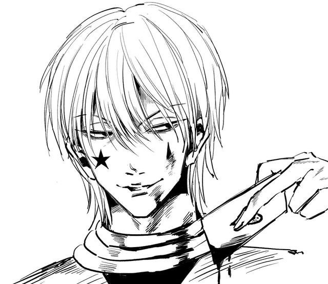
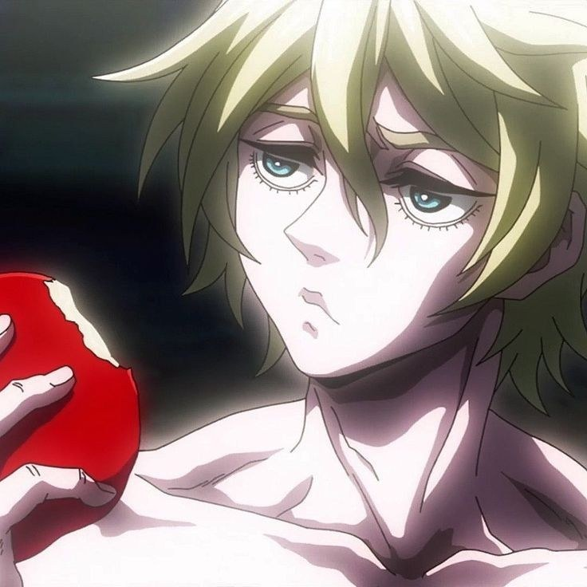
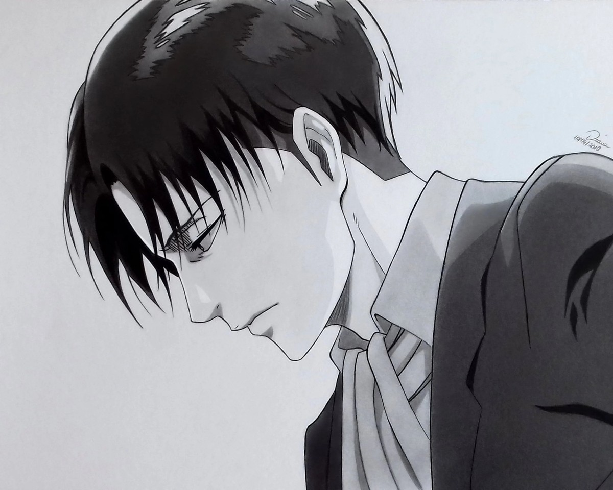
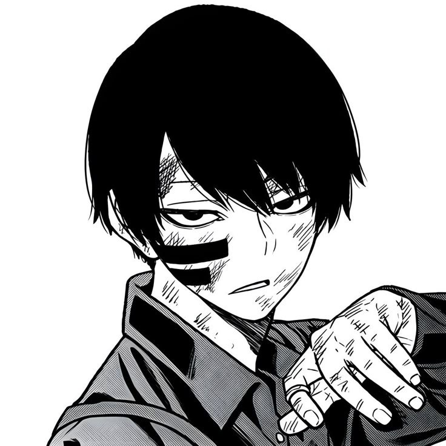
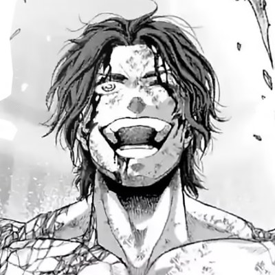
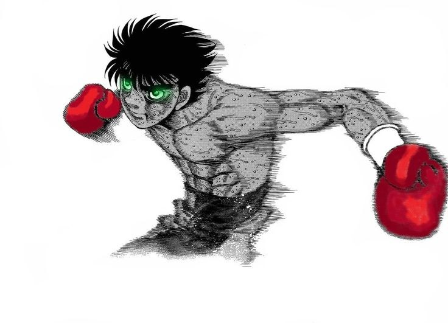

Doce paneles repartidos en tres tableros. Un primer grid de tres columnas
que se apila por debajo de 700 px y, dentro de cada
área, un segundo grid con celdas de una, dos y hasta tres filas.
03tableros
12paneles
700 pxpunto de quiebre
01
Shonen
Tensión · rivalidad · color
04

Destacado↗
Hunter × Hunter
Hisoka
Elegancia de circo y una baraja afilada: el rival que nunca juega limpio.
↗
Blue Lock
Bunny
↗
One Piece
Trafalgar Law
El cirujano de la muerte. Una celda que ocupa dos filas.

↗
Ragnarok
Adán
La calma también puede ser una amenaza.
Cuaderno de paneles
02
Seinen
Sombra · silencio · peso
04

Destacado↗
Attack on Titan
Levi Ackerman
La humanidad más fuerte, concentrada en una sola hoja.
↗
Kokou no Hito
Mori
La soledad de la montaña, en vertical.

↗
Tougen Anki
Mudano

↗
Ragnarok
Nikola Tesla
La sombra también es un personaje.
Cuaderno de paneles
03
Deportes
Impulso · sudor · segundo
04

Destacado↗
Hajime no Ippo
Ippo Makunouchi
Un paso más cerca del ring, una celda que ocupa toda la fila.